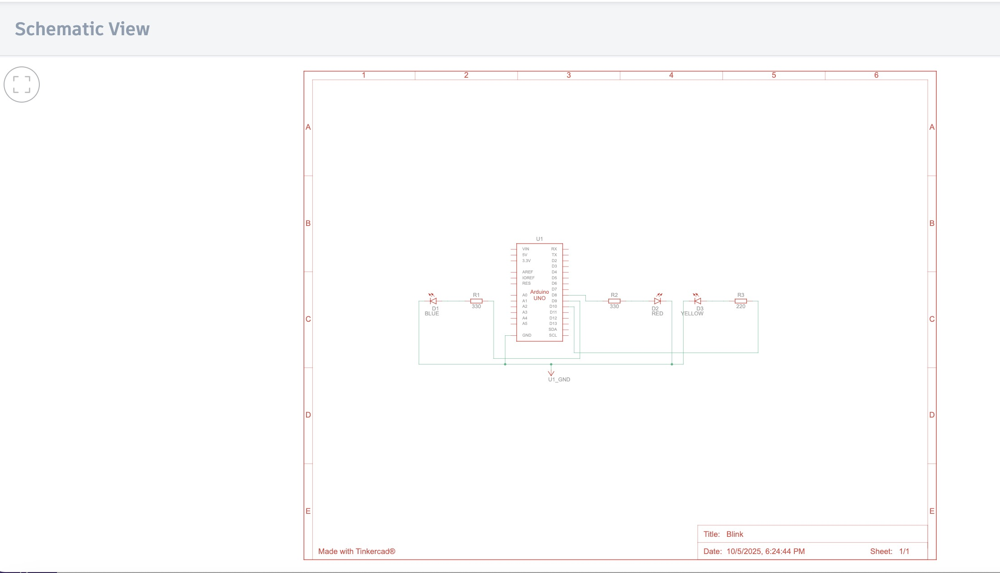
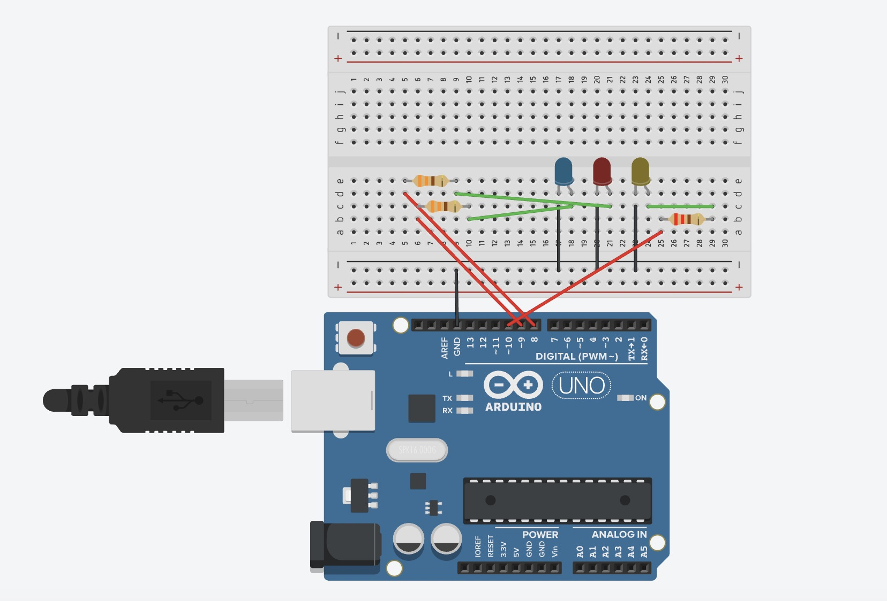
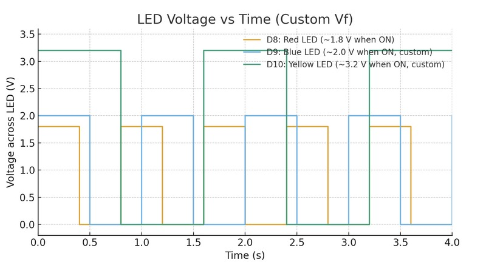

schematic
schematic!
circuit
circuit!
circuit's operation

circuit's operation!
graph!
X axis is time and the Y axis is voltage
D8 = Red D9 = Blue D10 = Yellow
Wiring: each channel is digital pin → resistor → LED anode (+); the LED cathode (–) goes to GND (shared ground rail).
Resistors (for ~8–10 mA per LED): Red = 330 Ω, Blue = 330 Ω, Yellow = 220 Ω.
Math (5 V board, target 10 mA):
Use R = (VARD − VF) / I, with VARD=5 V.
Red (VF≈1.8 V): (5−1.8)/0.01 ≈ 320 Ω → 330 Ω
Blue (VF≈2.0 V): (5−2.0)/0.01 ≈ 300 Ω → 330 Ω
Yellow (VF≈3.2 V): (5−3.2)/0.01 ≈ 180 Ω → 220 Ω
schematic!
circuit!
circuit's operation!
X axis is time and the Y axis is voltage
// C++ code
//
int redPin = 8;
int bluePin = 9;
int yellowPin = 10;
void setup() {
pinMode(redPin, OUTPUT);
pinMode(bluePin, OUTPUT);
pinMode(yellowPin, OUTPUT);
}
void loop() {
digitalWrite(yellowPin, HIGH); // turn on Yellow
delay(100);
digitalWrite(yellowPin, LOW); // turn off Yellow
delay(100);
digitalWrite(yellowPin, HIGH); // turn on Yellow
delay(100);
digitalWrite(yellowPin, LOW); // turn off Yellow
delay(300);
digitalWrite(redPin, HIGH); // turn on Red
delay(100);
digitalWrite(redPin, LOW); // turn off Red
delay(100);
digitalWrite(redPin, HIGH); // turn on Red
delay(100);
digitalWrite(redPin, LOW); // turn off Red
delay(300);
digitalWrite(bluePin, HIGH); // turn on Blue
delay(100);
digitalWrite(bluePin, LOW); // turn off Blue
delay(100);
digitalWrite(bluePin, HIGH); // turn on Blue
delay(100);
digitalWrite(bluePin, LOW); // turn off Blue
delay(300);
}
See the figure above (one trace per LED: Red, Blue, Yellow).
On an Arduino UNO you can practically control about 18 LEDs independently (avoid D0/D1 used by Serial). At ~8–10 mA per LED that’s roughly 144–180 mA total. Stay comfortably below the ATmega328P limits (≈20 mA per pin and ≲200 mA total); aiming ≤150 mA total is a good safety margin.
Human flicker-fusion threshold is typically around 50–60 Hz (period ≈ 20–16.7 ms). For a truly steady look, use ≥100 Hz (≤10 ms period).
Yes. I used AI to learn how to embed code on web page. I also verified pin and total-current limits and tested the circuit in simulation and on hardware.